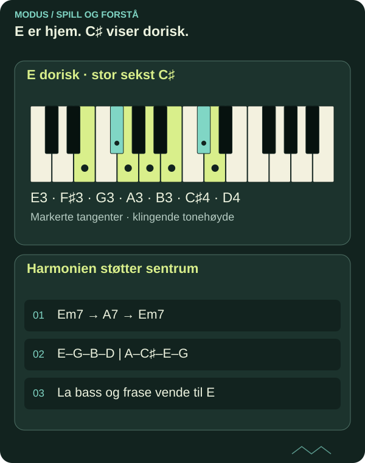

Moduser: sentrum er viktigere enn starttonen
Å begynne en durskala på en ny tone viser slektskapet mellom modusene. For å høre en modal klang trenger den nye tonen også å oppleves som sentrum.

Et sentrum gir tonene roller
E dorisk bruker tonene E, F♯, G, A, B, C♯ og D. Det er det samme tonematerialet som D-dur. Likevel kan musikken oppleves annerledes når E er grunntone og harmonien støtter E som sentrum.
Hvis du bare spiller disse tonene fra E til E over en tydelig D-durkadens, kan øret fortsatt høre D som hjem. Starttonen i løpeøvelsen overstyrer ikke nødvendigvis harmonien.

Les diagrammet som tekst
- E dorisk · stor sekst C♯: E3 → F♯3 → G3 → A3 → B3 → C♯4 → D4
- Harmonien støtter sentrum: Em7 → A7 → Em7; E–G–B–D | A–C♯–E–G; La bass og frase vende til E
Sammenlign fra samme grunntone
Parallell sammenligning gjør fargene lettere å høre. Sammenlign derfor E dorisk med E eolisk, fremfor å flytte grunntonen samtidig som du bytter modus.
| Klang | Formel | Sjette trinn fra E |
|---|---|---|
| E dorisk | 1–2–♭3–4–5–6–♭7 | C♯ |
| E eolisk | 1–2–♭3–4–5–♭6–♭7 | C |
Begge er mollpregede fordi de har liten ters. Dorisk har stor sekst; eolisk har liten sekst. Det ene trinnet kan påvirke både melodien og akkordvalget.
Spill samme frase over A
Mål. Hør hva den sjette tonen gjør når bassen, melodirytmen og sluttpunktet er like. Kjenn forskjellen på liten og stor sekst før du begynner.
Hold A i bassen i to takter i 4/4. Spill E4–F4–G4–E4 som firedeler i første takt. Spill C4 som firedel og A3 som punktert halvnote i andre takt. Gjenta med F♯4 på samme slag. Bruk samme tempo, anslag og bass i begge forsøkene.
På gitar kan åpen A-streng gi bassen. Finn E4, F4, F♯4 og G4 på B-strengen, bånd 5, 6, 7 og 8. C4 ligger på bånd 1 på samme streng, og A3 på G-strengens bånd 2.
Oppgave og fasit
Hvilken tone endres, og hvilken rolle spiller den mot bassen? Flytt begge versjonene til E og spill dem over en E-pedal.
Fasit. F er liten sekst over A og gir eolisk farge. F♯ er stor sekst over A og gir dorisk farge sammen med molltersen C. I E blir frasen B3–C4–D4–B3 | G3–E3, med C♯4 i den doriske versjonen. Hør etter om bass og sluttpunkt gjør E til det tydeligste sentrum.
La harmonien vise fargen
En vamp mellom Em7 og A7 kan fremheve E dorisk. A7 inneholder C♯, som er den store seksten i forhold til E. La Em7 oppleves som hjem, og bruk A7 som kontrast.
Du trenger ikke understreke karaktertonen hele tiden. Prøv å bruke den som en bevisst farge i en ellers enkel frase. Modalitet handler om hvordan musikken organiseres, ikke om å treffe et bestemt trinn flest ganger.
Ett halskart kan romme flere sentre
Tonene i G-dur finnes også i E eolisk, A dorisk og B frygisk. Det er en relativ sammenheng: tonematerialet beholdes, mens sentrum og intervallforhold endres. Det betyr ikke at en frase automatisk skifter modus hver gang den starter på en ny tone.
Spill de kjente tonene over en E-drone og deretter over en A-drone. Prøv å avslutte på henholdsvis E og A, og hør hvordan de andre tonene får nye roller. Et kart på gitarhalsen beskriver plasseringer; musikken avgjør hvilket sentrum som etableres.
FRA LESING TIL SPILLING
Prøv det selv.
Hold E som sentrum. Spill en kort frase med C♯, og spill deretter samme frase med C. Sammenlign både uten akkompagnement og over en E-drone.
Utforsk skalaer og moduser med pianoSJEKK FORSTÅELSEN
Hva sitter igjen?
Tre spørsmål om det du har lest. Alle tre riktige gir fullført quiz. Du kan prøve så mange ganger du vil.
Fullføring lagres i denne nettleseren og deles mellom norsk og engelsk.
Du har svart riktig på alle tre spørsmålene. Ta ideen med til instrumentet.
Til artikkelbiblioteket ↗︎